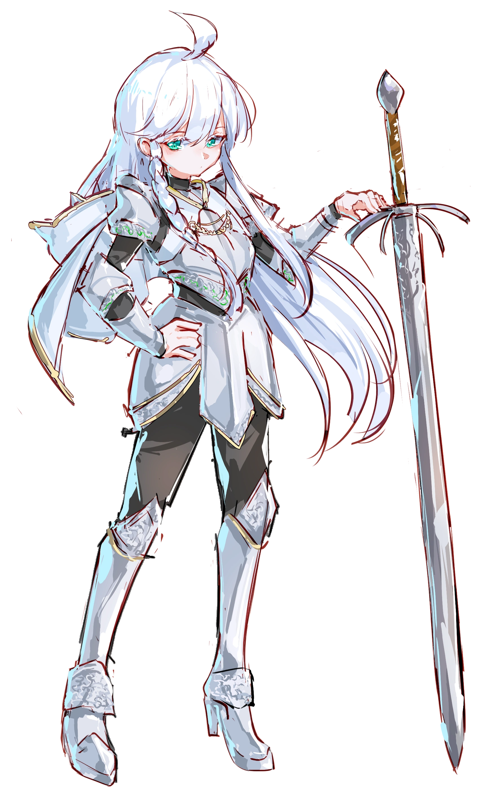

Alberina
阿尔贝莉娜
家人 · 引路人雪露约五岁时，结束漫游的阿尔贝莉娜住到村边，两人从那时起相识。多年相处下来，“朋友”已经不足以概括她在雪露心中的位置——雪露依赖她，遇事本能地相信她、跟着她；两人也曾在绝冬林共同救下芙勒维拉，见证雪露立誓后出现的微光。雪露又不甘心永远接受照顾：她想从莉娜姐姐身后走到她身边，将来还想挡在她前面。阿尔贝莉娜给了她最深的依靠，也是她最想证明自己已经长大的那个人。
The Windreed Wayfarers · Lives
Shirul
风芦旅人中最年轻的圣武士。别人还在判断彼此能不能信时，她已经开始说“我们”。

安柏弗村长家的第三个孩子，先听熟母亲的祷词，后来在 Sune 教堂长大。
雪露出生在安柏弗的村长家，排行第三，上面有姐姐和哥哥，父母都还在。她的母系带有少量半身人血统，她本人约有八分之一。母亲信奉 Sheela Peryroyl，雪露小时候在家中便接触过这份信仰。后来她被送到村里的 Sune 教堂生活，在那里识字、读经、祷告，也逐渐将 Sune 视作自己的信仰。
队里比她聪明、成熟的人不少，最早把几名同路人当成一家人的却是她。别人还在判断彼此能不能信时，她已经开始说“我们”。她因此成了风芦旅人的情感核心。
她天生白发，肤色很白，眼睛呈清透的青色。这样的长相出现在人类孩子身上并不常见，她走在人群里总会多招来几眼。她手脚纤细，乍看不像拿得动重武器——她用的偏偏是一柄几乎与自己等高的双手长剑。
一百三十九公分的骑士，与一柄一米二七的大剑。
第一次试着挥剑时，她发现剑比想象中轻，双臂却还是抡不动。站上前排靠的从来不是蛮力。
总想显得成熟的孩子，藏不住的实心眼。
性情Nature
雪露总想让自己显得成熟。她怕事，也容易相信别人的好意，被人夸过以后还会更卖力地证明自己。到了人前，她会把背挺直，郑重地说“这是我的责任”；卸下执勤时的架子，她温和、实心眼，孩子气也藏不住。
认真给了她勇气，也让她习惯苛责自己。出了岔子，她往往第一个检讨，错不全在她也一样。她相信人能改好，也相信许多冲突可以不用刀剑解决——这份信任让她愿意给人机会，也让她很容易受骗。
她理解的“正义”离清除和处决很远。能劝就先劝，能留人一命就会留，面对敌人也愿意给一条退路。到了非下重手不可的时候，她仍会挥剑。每条性命都牵连着别人，也可能还有挽回的余地，她不肯为了省事就把这些一起斩断。
性情五维Temperament
什么都好奇，答应必办，高兴全队都知道；信人、心软、不得罪任何人——代价是被冒犯当晚睡不着、常后悔、心情全写在脸上，还怕鬼。
言行Voices
“好问题欸。”“em……”“××姐姐！／哥哥！”
“嘿嘿嘿嘿。”
“对，对不起……我不是故意的……我，我会改的！”
“古贤之誓，第二戒，庇护光明：‘怜悯弱者，援助危难，挡于……挡于其前’……总、总之请你退后！我的剑不想沾血，但它会的！”
“好厉害哇 ×× 哥哥／姐姐……！”
习惯Small Things
一说谎就不敢看人；从不说脏话，生气时语速和音量都会上去。弱小、安静、无法开口求助的生命，尤其容易得到她的照顾。
力量不来自家传，也不是训练的结果——誓言本身回应了她。
Oath of the Ancients
她先留下，光才回应。
约 1490 DR、十三岁左右，她与阿尔贝莉娜深入绝冬林，在那里发现失去记忆、正陷入危险的芙勒维拉。阿尔贝莉娜开始救治，雪露守在旁边，不肯把这个陌生的生命留在林中。她先于任何结果立下誓言，随后出现的微光暂时稳住了芙勒维拉的伤势，近旁少量枝叶也生出新芽。具体危险、誓言原句与力量来源仍未确定；雪露将那道光认作 Sune 的回应。
怜悯弱者，援助危难，挡于其前。
生于安柏弗的村长家，先从母亲那里接触 Sheela Peryroyl，后来进入村里的 Sune 教堂。村里的温泉，是她从小最爱赖着不走的地方。
与莉娜姐姐在绝冬林救助芙勒维拉。她先选择留下并立誓，局部的神迹随后出现。那年她约莫十三岁。
离开村庄，与风芦旅人同行。守护生命、光与希望，站在危险的最前面。
她会管人，会担心，会逞强地抢到最前面，还常把别人的麻烦揽在自己身上。
Alberina
雪露约五岁时，结束漫游的阿尔贝莉娜住到村边，两人从那时起相识。多年相处下来，“朋友”已经不足以概括她在雪露心中的位置——雪露依赖她，遇事本能地相信她、跟着她；两人也曾在绝冬林共同救下芙勒维拉，见证雪露立誓后出现的微光。雪露又不甘心永远接受照顾：她想从莉娜姐姐身后走到她身边，将来还想挡在她前面。阿尔贝莉娜给了她最深的依靠，也是她最想证明自己已经长大的那个人。
Flavilar
两人常在前排并肩：芙勒维拉用力量打开局面，雪露负责补位、守线和接应。平时她们一起上课，一起认识这个世界。芙勒维拉不会站在长辈的位置照顾她，她们只管一起学着往前走。
Pheiron
佩伦爱小偷小摸，也擅长用几句话脱身；雪露会认真追究这些“不规矩”的举动，“抓包与说教”于是成了两人的日常。他一直叫她“小骑士”——称呼里有打趣，也承认了她确实在努力做一名骑士。
Skamos
斯卡摩斯原先习惯站在人群外观察，很少主动卷进别人的事。雪露很自然地把他算进自己人里，久而久之，他也留在了队伍中。他可能比旁人更早发现：她终究还只是个孩子。
Merielle
大姐的听力很早就出了问题，雪露几乎从一开始就习惯她的安静和轻声，习惯用文字与神情和她交流。姐姐写给她的字条，她攒成了用绳子扎起的一小叠，一直带在身上。
雪露最愿意主动靠近别人，也最容易把路上遇见的人认作自己人。她十分看重“我们”，因此总想保全每一个人，也总怕任何一个人离开。
Epilogue
雪露最怕身边的人离开。她想变得可靠，想站到危险前面，也不愿再留在原地、看着别人远去。
「枝桠」，莉娜。